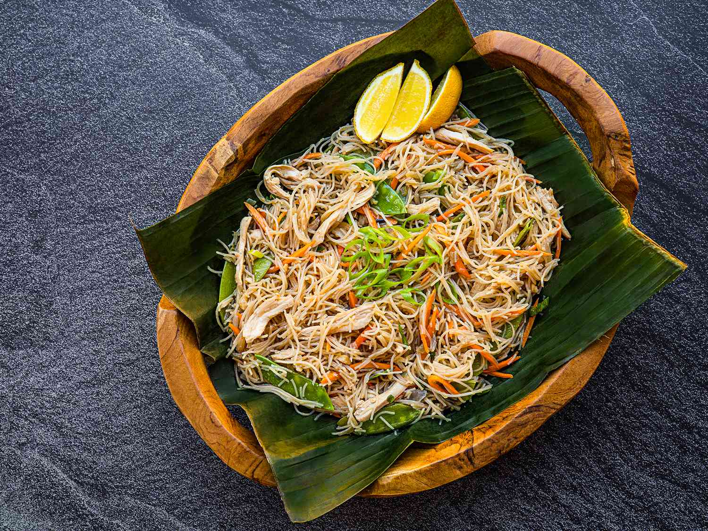

Pancit

Pancit comes in many forms, and the names of the dishes typically indicate the type of noodle used, the place of origin, the other ingredients, and/or the method of eating it. For example, pancit Malabon, which features an assortment of seafood, is named after a coastal city in Metropolitan Manila.
Ingredients
- 1 3/4 pounds (795g) bone-in, skin-on chicken thighs
- 1 tablespoon (15ml) canola oil
- 7 medium garlic cloves, minced
- 1/2 medium red onion (about 4 ounces; 115g), finely diced
- 2 medium carrots (about 6 ounces; 170g), peeled and grated on large holes of box grater
- 4 ounces (115g) snow peas, stem ends trimmed and strings removed
- 8 ounces (225g) rice vermicelli noodles (see notes)
- 2 tablespoons plus 2 teaspoons (40ml) oyster sauce
- 2 tablespoons (30ml) soy sauce, preferably Filipino brands such as Silver Swan or Datu Puti
- 1 tablespoon (15ml) fish sauce
- 1 scallion, ends trimmed and sliced thinly on a bias, for garnish
- Calamansi halves, for serving
Steps
- For the Chicken: Fill a 4-quart saucepan halfway with water. Bring to a boil over high heat. Add chicken thighs, return to a boil, partially cover with lid, then lower heat to maintain a simmer. Cook, until chicken is tender and falling away from the bone, about 40 minutes.
- Using tongs, transfer chicken thighs to a rimmed baking sheet or platter and set aside until cool enough to handle, about 10 minutes. Strain remaining liquid through a fine-mesh strainer set over a large heatproof bowl; set aside (you should have about 1 1/2 quarts; 1.4L). Once chicken is cool, finely shred chicken using two forks; discard skin and bones. Set aside.
- For the Pancit Noodles: In a wok, heat oil over high heat until shimmering. Add garlic and onions and cook, stirring frequently, until softened and light brown in color, about 2 minutes.
- Add carrots and snow peas and cook, stirring frequently, until vegetables have brightened in color and are crisp-tender, about 2 minutes. Scrape stir-fried vegetables into a medium heatproof bowl; set aside.
- Add 1 quart (1L) of the reserved broth to the wok and bring to a boil over high heat. Add rice noodles, stirring to ensure that noodles are wet. Cook, stirring frequently, until noodles soften and turn translucent, about 3 minutes; if noodles appear dry, add more stock in 1/4 cup (60ml) increments.
- Return stir-fried vegetables to wok along with shredded chicken and mix well. Lower heat to maintain a simmer. Add oyster sauce, soy sauce, and fish sauce, and stir until sauces are fully incorporated and noodles are coated in a saucy glaze.
- Garnish with scallions. Serve immediately with calamansi halves (or serve with a small dish of citrus juice alongside)
Return to main page